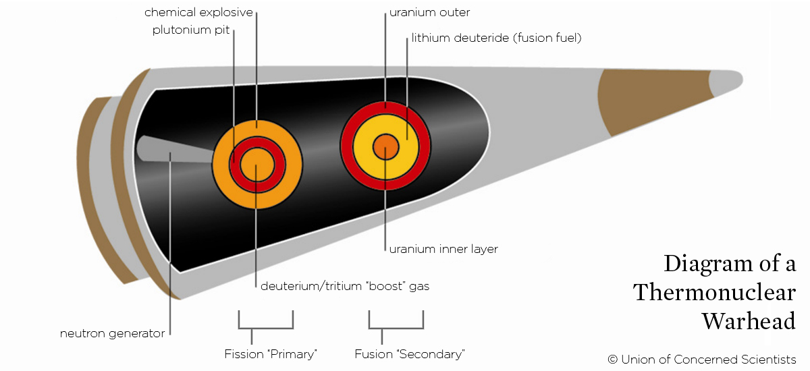
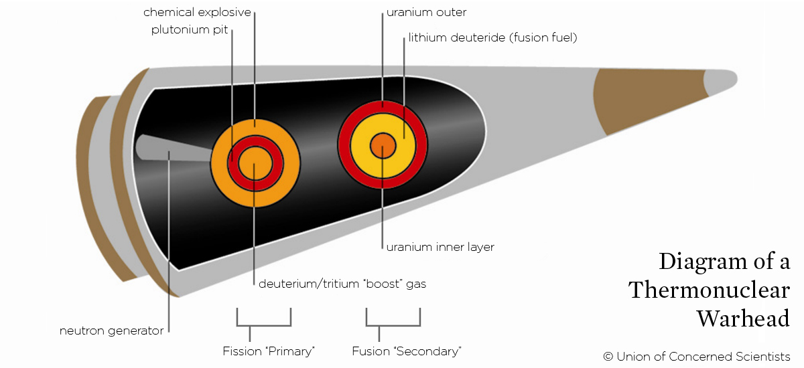

Version- Alpha 1.0.0
What are the different types of warheads?

Define warhead. A warhead is the explosive head of a missile, torpedo, or similar weapon. We will be talking about warheads on the V2 missile. There are many different types of warheads. Some include; Thermonuclear/Nuclear, Implosion, Controversial, Blast, Fragmentation, Continuous Rod, Shaped Charge, Chemical, and Biological.
Here are the explanations of what each warhead does.
- Explosive: An explosive charge is used to disintegrate the target.
- Conventional: Chemicals such as gunpowder and high explosives store significant energy within their molecular bonds. This energy can be released quickly by a trigger.
- Blast: A strong shock wave is produced by the explosion of the warhead.
- Fragmentation: Metal fragments are exploded, therefor, shooting them at high velocity which causes damage or injury.
- Continuous rod: Metal bars welded on their ends form a compact cylinder of rods, which is violently expanded into a contiguous zig-zag-shaped ring by an detination. The rapidly expanding ring produces a cutting effect that is very effective against military aircraft.
- Shaped charge: The effect of the explosive charge is focused onto a specially shaped metal liner to project a hypervelocity jet of metal, to perforate heavy armour.
- Nuclear: A nuclear fission bombs reaction causes immense energy release.
- Chemical: A toxic chemical, such as poison gas, is ejected, which is designed to injure or kill humans.
- Biological: An infectious host is dispersed, which is designed to sicken or kill humans.
